Task 7 - Create a MRF Secondary Region
The Secondary Region is a feature within Multi-Region Fabric that provides a direct path between sites in different regions. Depending on the requirements, this path over 2nd region can serve as primary path between sites in different regions, or as backup path.
In this task you will create a Secondary Region between the West Site 5000 and the East Sites 6000 and 7000 as shown in the diagram below.
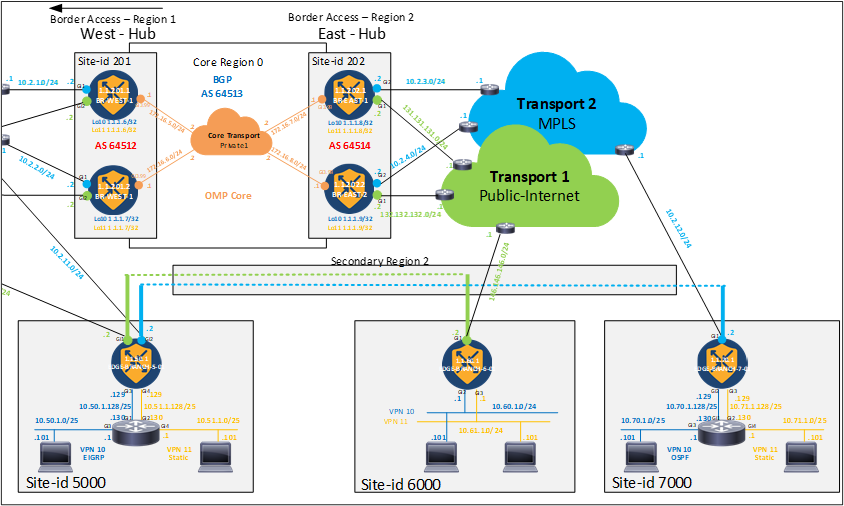
First, RDP into the Ubuntu Site-5000-VPN-10-Ubun host in Site 5000 using the mRemoteNG client and the ping and trace the IP 10.60.1.101* that lives in Site 6000**.
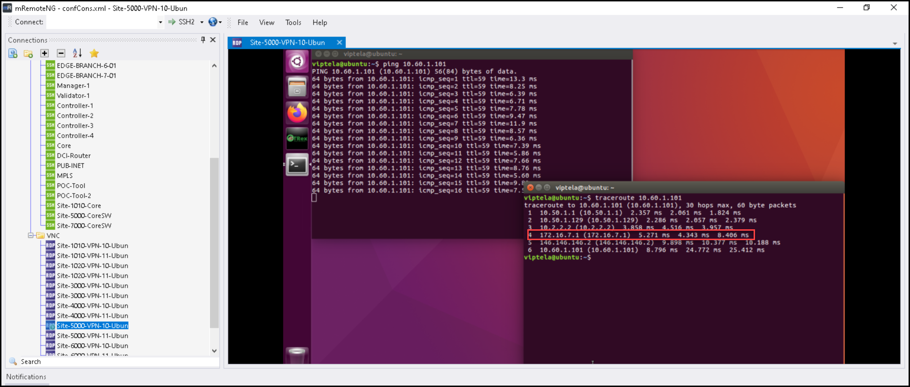
As you can see, it is reachable through the Fabric in the Core now.
Step 1: Create Secondary Region
Create the Secondary Region, therefore go to Configuration > Network Hierarchy and in Global click on the 3 dots and select ‘Add Node’.
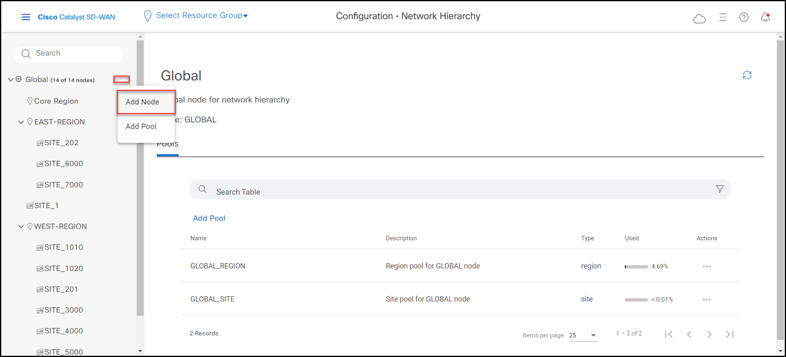
Select the ‘Region’ Type and name it as SECONDARY-REGION
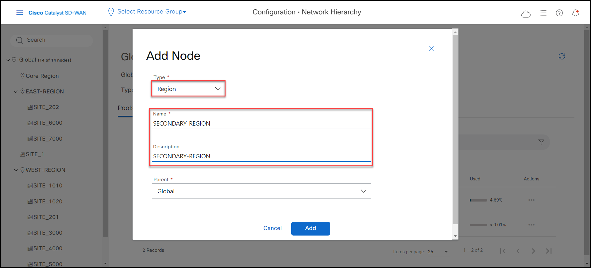
Click ‘Add’.
Note. As with the primary West and East Region, now this Secondary region has been assigned with the Region ID 3 automatically by the system
Step 2: Create Transport Interface Feature Templates with Secondary Region
Now, go to Configuration > Templates > Feature and look up for the existing cEDGE_SITE-ALL_VPN-0_PUB-INET_IF_FT feature template and click 'Copy' to clone it.
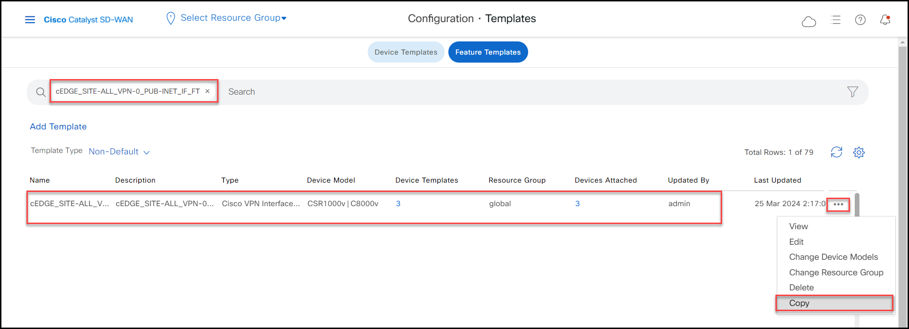
Name it as cEDGE_SITE-PRI_AND_SEC-REGIONS_VPN-0_PUB-INET_IF_FT and click ‘Copy’
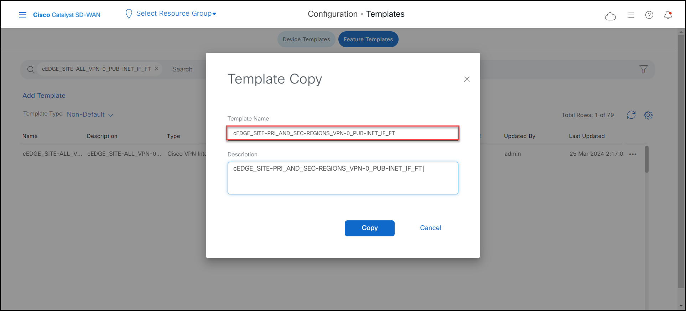
Now, look up for the template we just cloned named cEDGE_SITE-PRI_AND_SEC-REGIONS_VPN-0_PUB-INET_IF_FT and edit it.
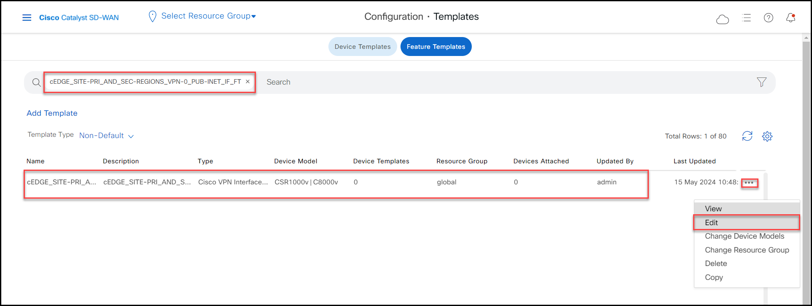
Next, go to the ‘Tunnel’ section and under ‘Advanced Options’, enable ‘Secondary Region’ as Shared Between Primary and Secondary Regions and click ‘update’.
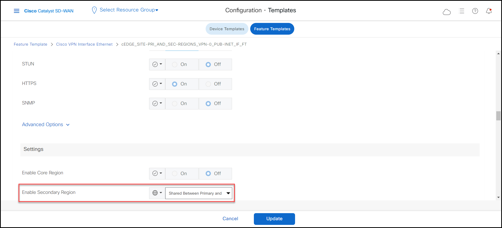
Click 'Update'.
Step 4. Again, go to Configuration > Templates > Feature and look up for the existing cEDGE_SITE-ALL_VPN-0_MPLS_IF_FT feature template to clone it.
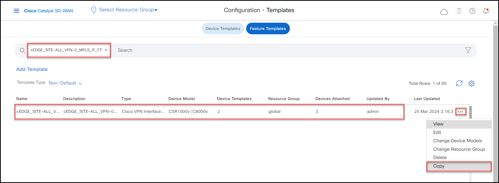
Name it as cEDGE_SITE-PRI_AND_SEC_REGIONS_VPN-0_MPLS_IF_FT
Click ‘Copy’.
Now, look up again for the template we just cloned named cEDGE_SITE-PRI_AND_SEC_REGIONS_VPN-0_MPLS_IF_FT and edit it.
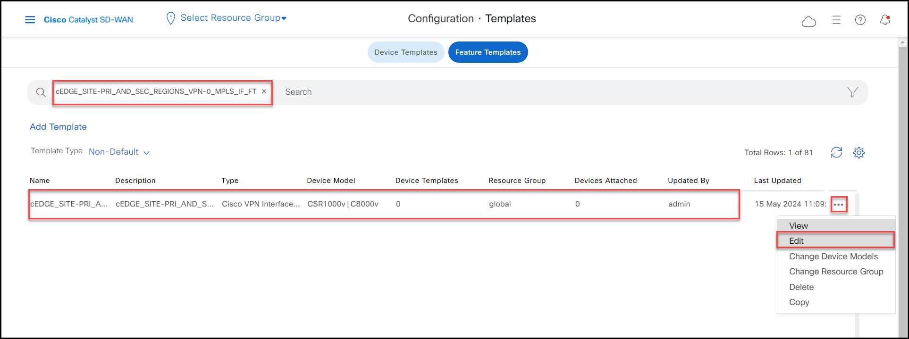
First, define the Interface Name as a variable (this because it will be used for Site7000 that uses a different interface for the MPLS TLOC).
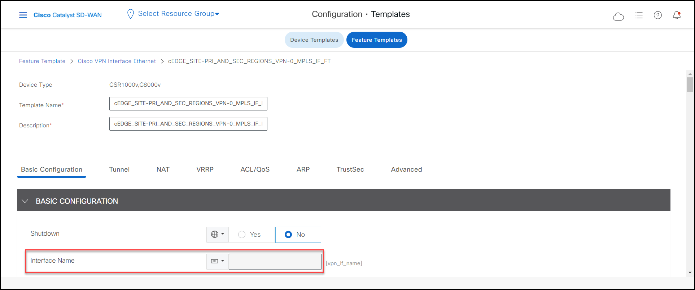
Next, go to the ‘Tunnel’ section and under ‘Advanced Options’, enable ‘Secondary Region’ as Shared Between Primary and Secondary Regions
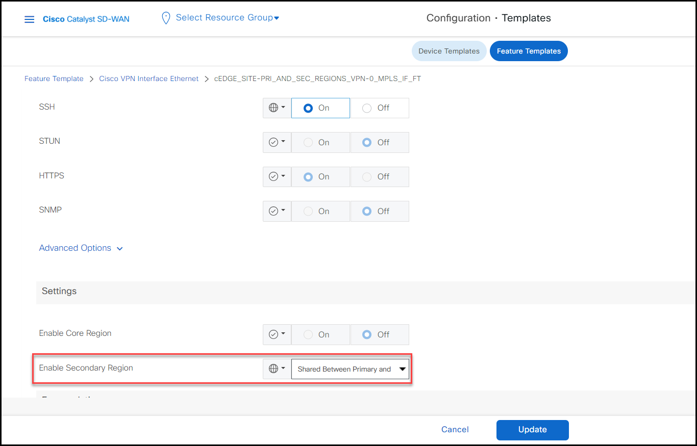
Click 'Update'.
Step 3: Create an OMP Feature Template to influenciate the OMP Best Path Algorithm
Go to Configuration > Templates > Feature and let’s copy now the existing cEDGE_ALL_OMP_FT feature template.
Name it as cEDGE_OMP_PRI_AND_SEC_REGIONS_FT
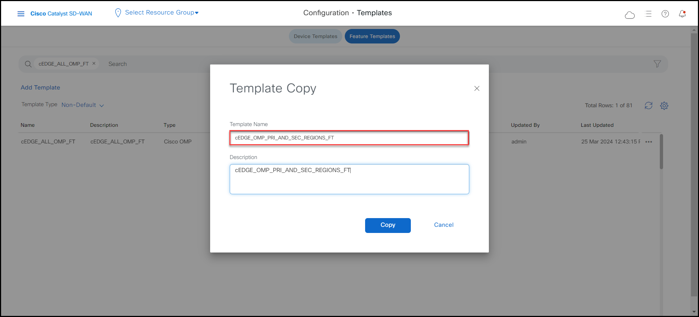
Click ‘Copy’.
Once created it look up for cEDGE_OMP_PRI_AND_SEC_REGIONS_FT and edit it.
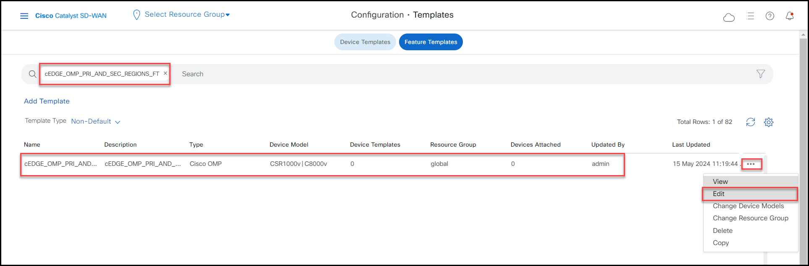
Now go to the ‘Best Path’ section, and make Global on to enable the Ignore Region-Path Length During Best-Path Algorithm parameter, then click ‘update’.
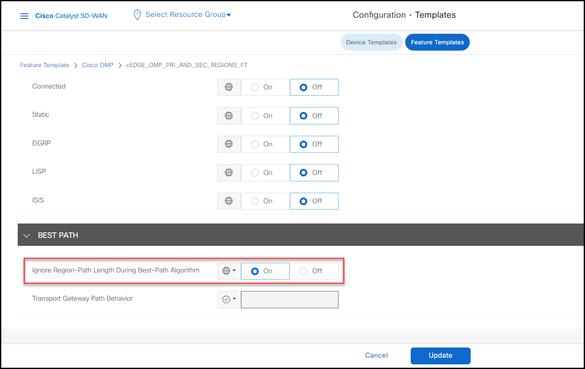
Click 'Update'.
Note: The default value is Off, and by default, OMP gives preference to a direct tunnel path over a hierarchical path because the direct path has fewer hops
With this configuration, we disable the comparison of the number of hops, OMP applies equal-cost multi-path routing (ECMP) to all routes, and packets can use all available paths.
Step 4: Create a System Feature Template with Secondary Region for Site 5000
Let’s clone the Cisco System Feature template currently used by the Site 5000 edge router to participate in the secondary. So, go Configuration > Templates > Feature and look up for the cEDGE_EDGE-WEST_SYSTEM_FT and click ‘Copy’
Name it as cEDGE_PRI_AND_SEC_REGIONS-WEST_SYSTEM_FT.
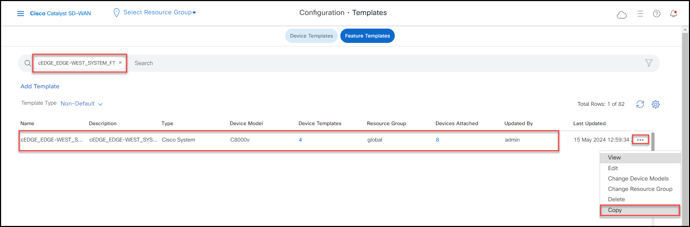
Click ‘Copy’.
Look up for the cEDGE_PRI_AND_SEC_REGIONS-WEST_SYSTEM_FT feature template we just created and click ‘Edit’
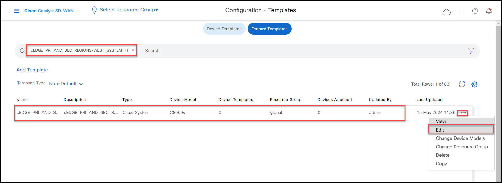
Make Global on the ‘Secondary Region’ parameter and select SECONDARY-REGION from the dropdown menu.
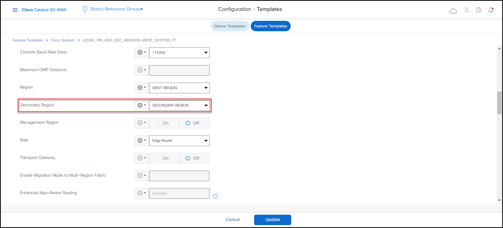
Click ‘Update’ to save the changes.
Step 5: Update Site 5000 Device Template
Next, go to Configuration > Templates > Device Templates look up for the cEDGE_SITE-5000_DT device template and edit it.
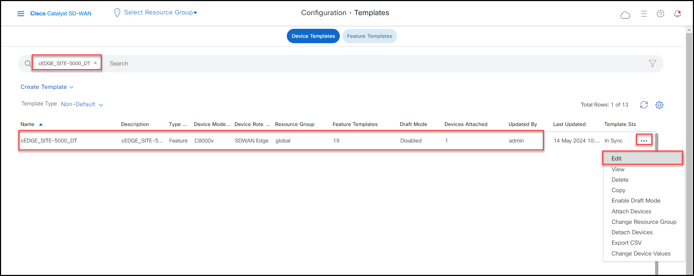
In the ‘Cisco System’ section, select the feature template we previously created named cEDGE_PRI_AND_SEC_REGIONS-WEST_SYSTEM_FT
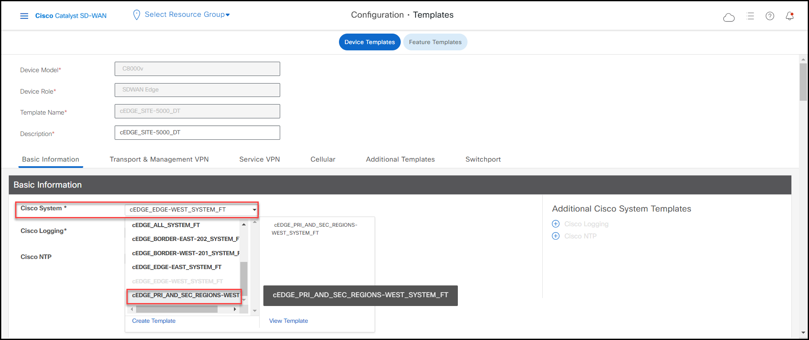
Now, in the ‘Cisco OMP’ section, select the cEDGE_OMP_PRI_AND_SEC_REGIONS_FT feature template we created in step 3.
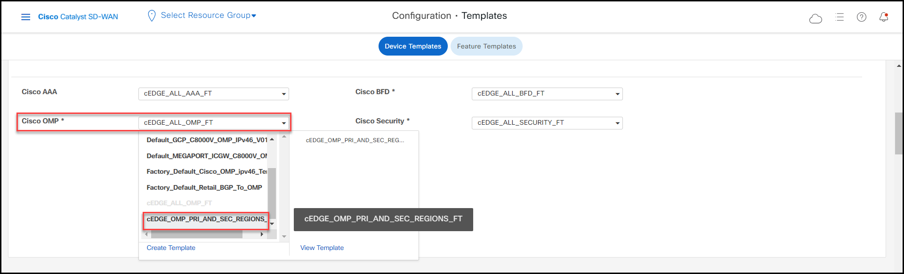
Next, in the ‘Transport & Management VPN’ section, change the two Cisco VPN Interface Ethernet feature templates to the ones created in step 1 named cEDGE_SITE-PRI_AND_SEC-REGIONS_VPN-0_PUB-INET_IF_FT and cEDGE_SITE-PRI_AND_SEC_REGIONS_VPN-0_MPLS_IF_FT respectively.
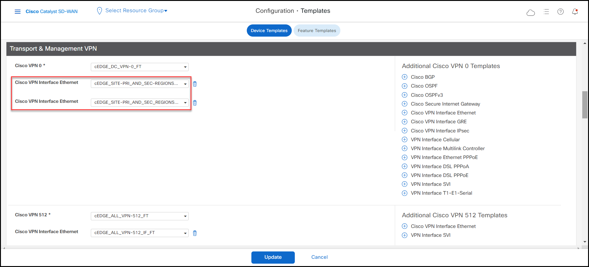
Finally, click ‘Update’, and fill out the 2 missing variables with GigabitEthernet2 and 10.2.11.2/24 respectively.
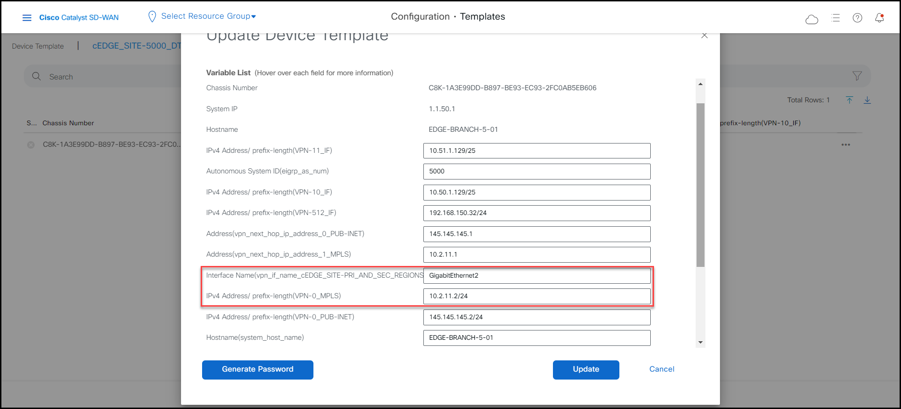
Click ‘Update’ and you should see in the ‘Config Diff’ section all the next lines in green color being pushed to the device if you scroll down
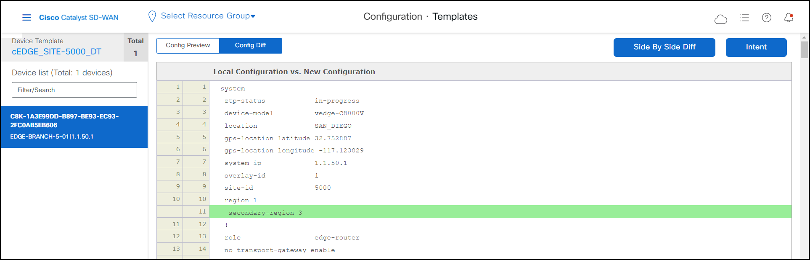 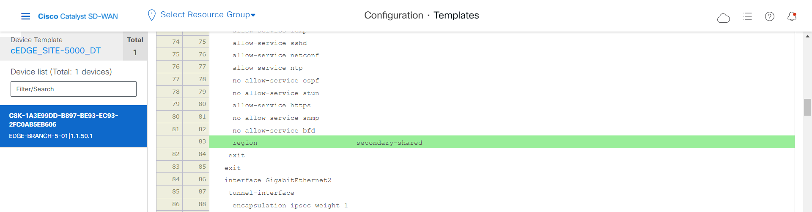 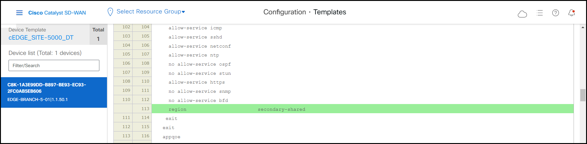 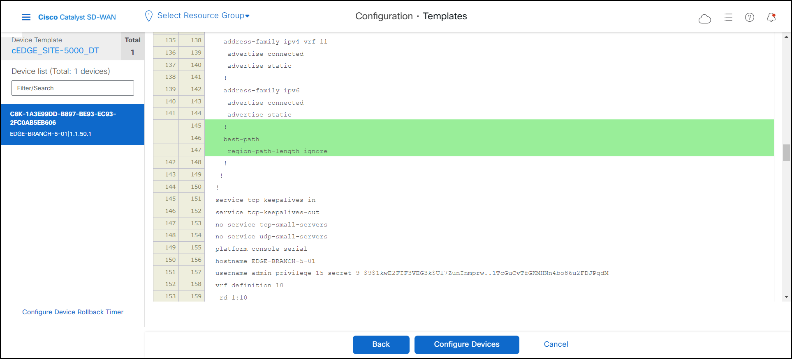
Finally click ‘Configure Devices’.
Step 6: Create a System Feature Template with Secondary Region for Site 6000 and 7000
Again, for simplicity, let’s copy the ‘System’ Feature template currently used by the Site 6000 and 7000 to participate in the secondary. So, go Configuration > Templates > Feature and look up for the cEDGE_EDGE-EAST_SYSTEM_FT and click ‘Copy’.
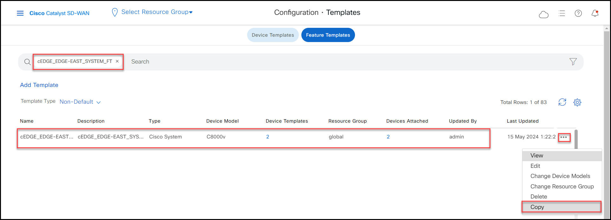
Name it cEDGE_PRI_AND_SEC_REGIONS-EAST_SYSTEM_FT
Next, look up for the same cEDGE_PRI_AND_SEC_REGIONS-EAST_SYSTEM_FT feature template we just created and click ‘Edit’.
Next, make Global on the ‘Secondary Region’ parameter and select SECONDARY-REGION from the dropdown menu.
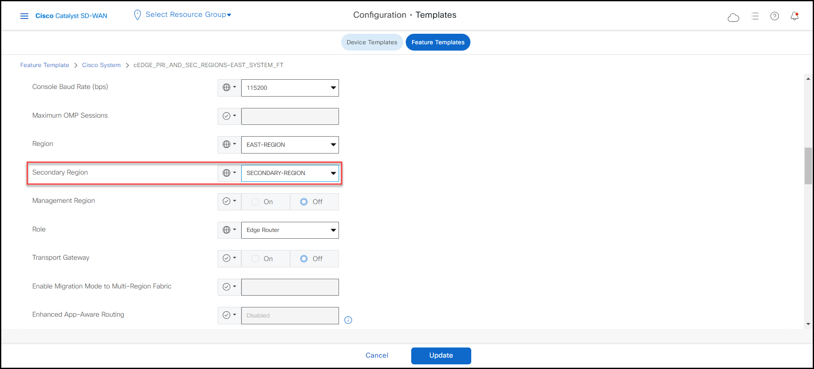
Click ‘Update’.
Step 7: Update Site 6000 Device Template
Now in Configuration > Templates > Device Templates look up for the cEDGE_SITE-6000_DT device template and edit it to call all the new feature templates.
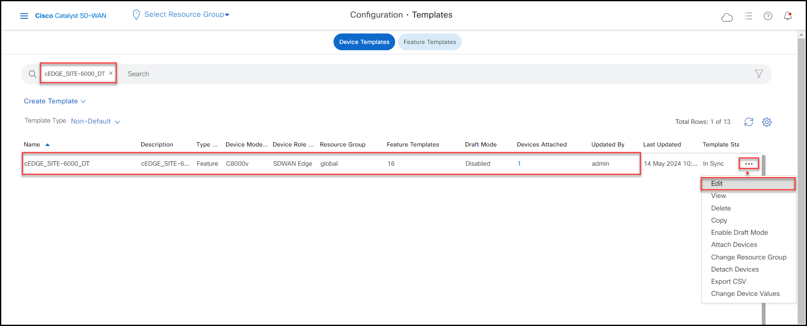
In ‘Cisco System’ section select the feature template we previously created named cEDGE_PRI_AND_SEC_REGIONS-EAST_SYSTEM_FT.
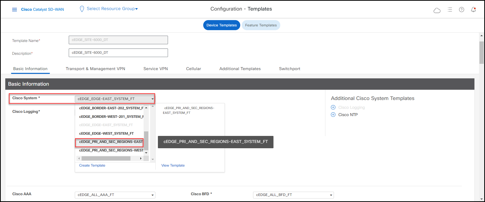
Next, in the ‘Cisco OMP’ section, select the cEDGE_OMP_PRI_AND_SEC_REGIONS_FT feature template we created in step 3.
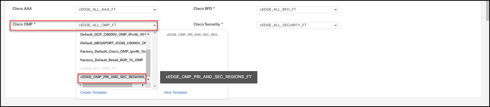
Now, in the ‘Transport & Management VPN’ section, change the two Cisco VPN Interface Ethernet feature templates to the ones created in step 2 named cEDGE_SITE-PRI_AND_SEC-REGIONS_VPN-0_PUB-INET_IF_FT
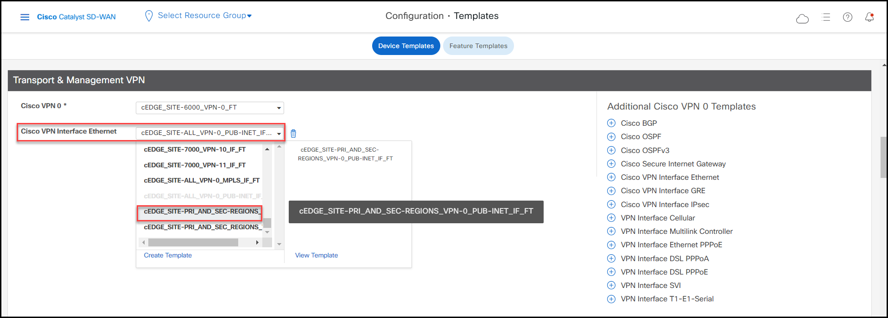
Click ‘Update’, then ‘Next’.
You should see the all the next lines in green color in the ‘Config Diff’ being pushed to the device if you scroll down. Finally click ‘Configure Devices’.
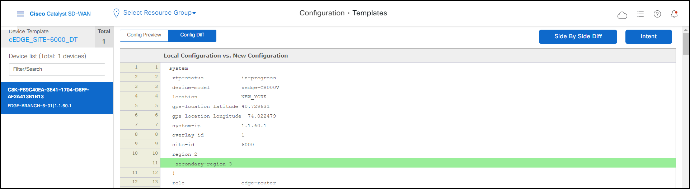 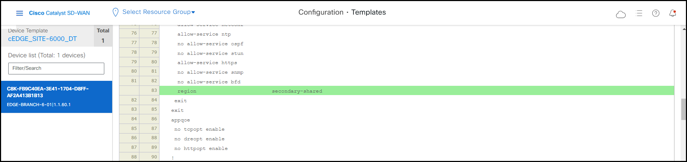 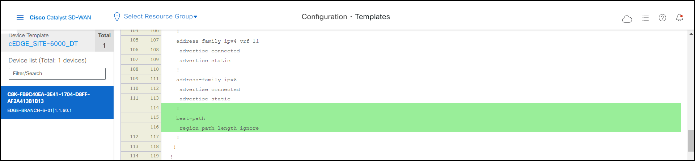